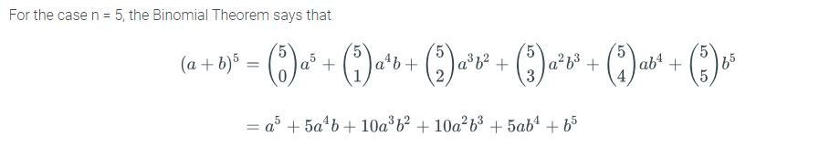
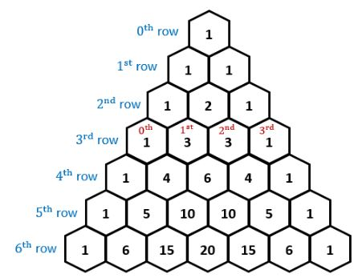
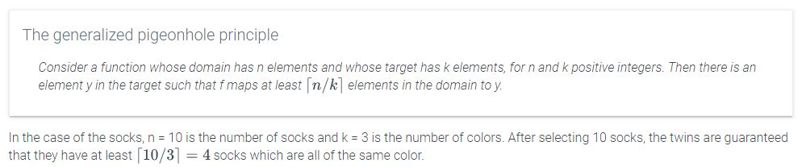

inclusion-exclusion principle - When counting two sets that overlap (red playing cards & face cards) you will need to use the following formula to not count the intersection twice:
inclusion-exclusion principle with 3 sets -
combinatorial identity:
The Binomial Theorem:

Pascal's Triangle
Construct a triangle with binomials
where
To calculate each rows value, the outside values are 1, and the inside values are the sum of
the two numbers above it.

Pigeonhole Principle - if n+1 pigeons are placed in n boxes, then there must be at least one box with more than one pigeon.
In other words:

Generalized pigeonhole principle
Suppose that a function maps a set of n elements to a target set with k elements, where n and k are positive integers.
In order to guarantee that there is an element y in the target to which f maps at least b items,
then n must be at least k(b - 1) + 1.
This works for situations where you are filling in a list evenly. Say you are creating two
basketball teams and want to know how many people you have to pick until at least one team has
someone on the bench. That would be from a set N (students in gym class) going to set K
(basketball teams), where b is a benched player (or 6 people on a team).
or
So the 11th player pick is guaranteed to be placed on the bench.